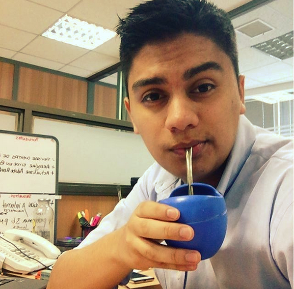

CV de Hernan Barra
Desarrollador y JP de "Amigo de 4 patas"
4 años de experiencia en soporte técnico en la empresa Nueva Idea S.A,
trabajando en diversas funciones relacionadas con la tecnología de la
información.
Educación
- Ingenieria en Informatica
- 2013-2018 Instituto Ciisa
- Tecnico Nivel Medio en Telecomunicaciones
- 2011-2012 Liceo Ramon Barros Luco
- Enseñanza Basica
- 2001-2008 Saint Orland School
- Cursos de Especializacion
- 2010: Curso Prevencion de Riesgos para futuros trabajadores
- 2012: Capacitacion de IT Essentials en IP Chile
- 2012: Certificado por la Universidad Chileno-Británica de Cultura- Nivel básico en Ingles

Experiencia Profesional
- Tecnico de Soporte
- 2013 a la fecha en la empresa Nueva Idea.
- Funciones
- Administrador y control de VPS
- Administrador y control de WHM/Cpanel
- Admnistrador de servicios de correos
- Soporte Nivel 1 a los clientes
- Implant en empresa de logistica y comercio exterior "Capital Trade"
Competencias Laborales
- Instalación y actualización de sistema ERP
- Instalación de sistema operativo Windows y OS
- Creación y configuración de correo electrónico
- Conocimientos básicos en Bases De Datos(MYSQL)
- Conocimientos básicos de S.O Linux (Minimal y Desktop)
- Manejo en Aplicaciones de oficina Excel, Word, Outlook y Power Point
- Licencia de conducir Clase B